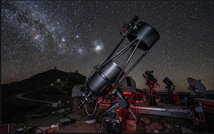
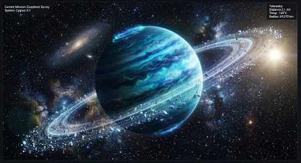
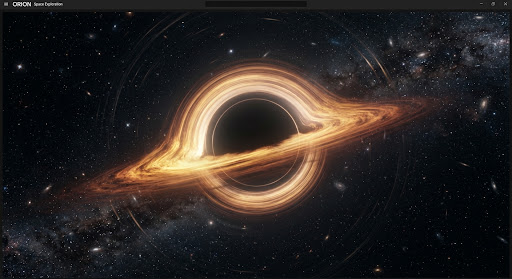

ORBITAL OBSERVATORY // DEEP SPACE UPLINK 04
BEYOND THE UNKNOWN HORIZON
Chart deep space telemetry, planetary cartography, and cosmic mysteries through the ORION observation array. Real-time sub-light spectral telemetry.
8 PLANETS
High-res 8K textures
12,400+ LY
Observation radius
5 HISTORIC
Missions logged
4 MYSTERIES
Singularities & Matter
SECTION 01 // THE INITIATIVE
PIONEERING THE ORION STANDARD
The Orion Initiative bridges ground-based radiotelescope arrays with orbital quantum relays to deliver unfiltered deep-sky cartography.
SPECTRAL FIDELITY
Sub-angstrom resolution across ultraviolet and infrared wavebands.
SPECTRAL FIDELITY
Sub-angstrom resolution across ultraviolet and infrared wavebands.
SPECIALIST TELEMETRY DIRECTORS
Dr. Lyra Vance
Luxury Space Travel ConsultantKaelen Thorne
Celestial Data Specialist
ATACAMA QUANTUM ANTENNA NO. 09
SECTION 02 // FEATURED SECTORS
RECENT CELESTIAL DISCOVERIES
04-X // 992

PLANETARY_BODY
Krios Prime88-Z // 110
DEEP_SPACE_OBJECT
The Veil Nebula??-? // UNK

VOID_PHENOMENA
Singularity 01